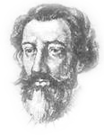

Foglalkozását tekintve jogász volt. Fiatal korában támadt egy ötlete új csillagászati elmélethez, amely a
kopernikuszi rendszert fejlesztette volna tovább. Ennek érdekében kezdett el a matematikával foglalkozni. Tehetséges
emberként kezdetben jogászként is sikeres pályája volt. III. Henrik, majd IV. Henrik francia király ügyésze és
tanácsosa volt. Később kegyvesztett lett.
Munkásságáról
Kezdetben elsősorban trigonometriával foglalkozott.
1584 és 1589 között, kegyvesztettsége idején írta meg fő művét az In artem analyticam isagoge-t. (Bevezetés az
analízis tudományába).
Ez egy befejezetlensége ellenére is hatalmas munka, benne új algebrai megoldásokkal. Az egyenletmegoldás általános
módszereit kereste. Ezért a Diophantosz által megkezdett úton az algebrai jelölésrendszert fejlesztette tovább.
Igyekezett szimbólumokkal dolgozni, az együtthatók helyett is betűket használt. Ezek segítségével formulát tudott
felírni a másodfokú egyenletek megoldására.
A harmadfokú egyenletek megoldásával is foglalkozott.
Igen jelentős eredménye a végtelen sorozatok felfedezése.
Másodfokú egyenletek gyökök és együtthatók kapcsolatát megadó képletek, a Viete-formulák is őrzik a nevét.
A másodfokú egyenlet
A másodfokú egyenlet általános alakja ax
2
+bx+c=0. Megoldó képlet:
Ahol a gyök alatt álló kifejezés a diszkrimináns (D), ami meghatározza a valós gyökök számát. Ha D<0, akkor nincs
megoldás, ha D=0, akkor egy megoldás, ha D>0, akkor két megoldás van.